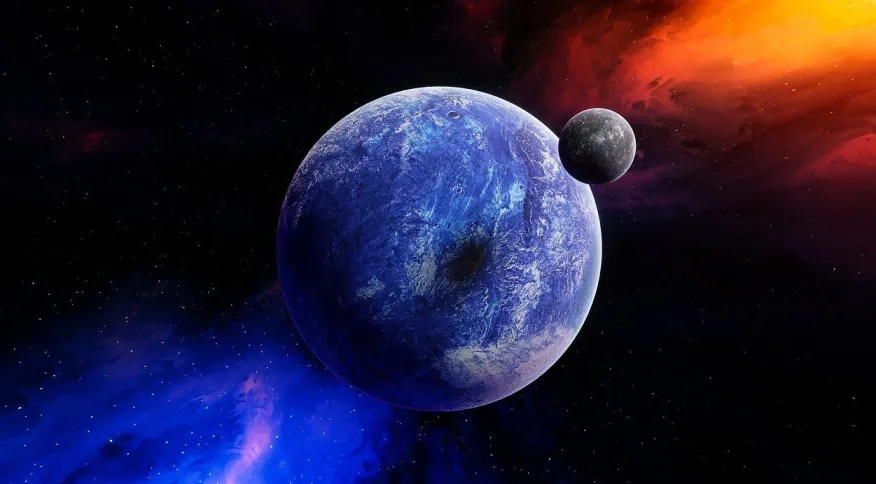

Quantos planetas A Nasa já descobriu

Existem mais de 5.000 mundos além do nosso sistema solar, diz Nasa. A descoberta de planetas localizados fora do sistema solar, também chamados de exoplanetas, contribui para os estudos de possíveis sinais de vida pelo universo.
Nesta terça-feira (22), a Nasa alcançou um marco expressivo ao ultrapassar a contagem de mais de 5.000 exoplanetas descobertos pelos telescópios da agência espacial norte-americana. Segundo a Nasa, a jornada de 30 anos ampliou o conhecimento do universo, até então restrito aos planetas do sistema solar.
O contador planetário ultrapassou a marca com o último lote de 65 exoplanetas adicionados ao Arquivo de Exoplanetas da Nasa. O arquivo registra descobertas de exoplanetas que aparecem em artigos científicos revisados por pares e que foram confirmados usando vários métodos de detecção ou por técnicas analíticas.
De acordo com a Nasa, os mais de 5.000 planetas encontrados até o momento incluem mundos pequenos e rochosos como a Terra, gigantes gasosos muitas vezes maiores que Júpiter e os chamados “Júpiteres quentes”, que estão em órbitas extremamente próximas em torno de suas estrelas.